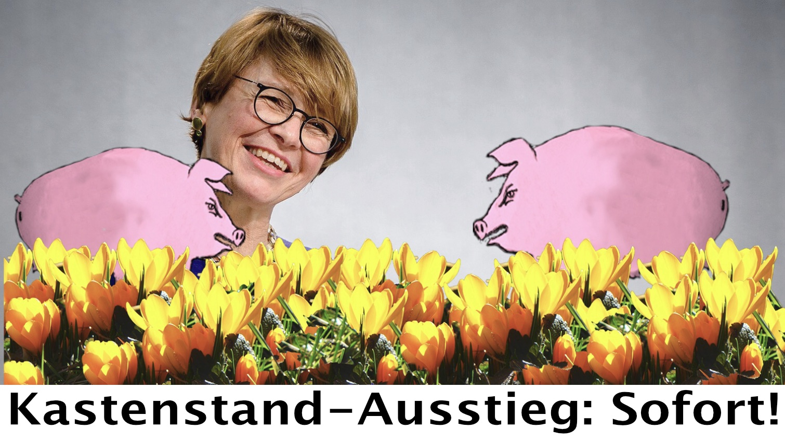
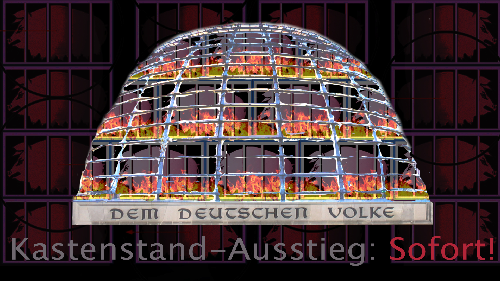
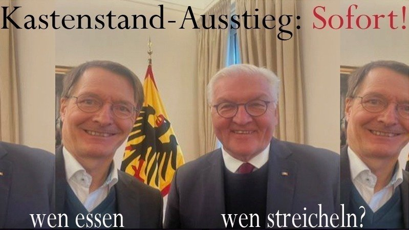
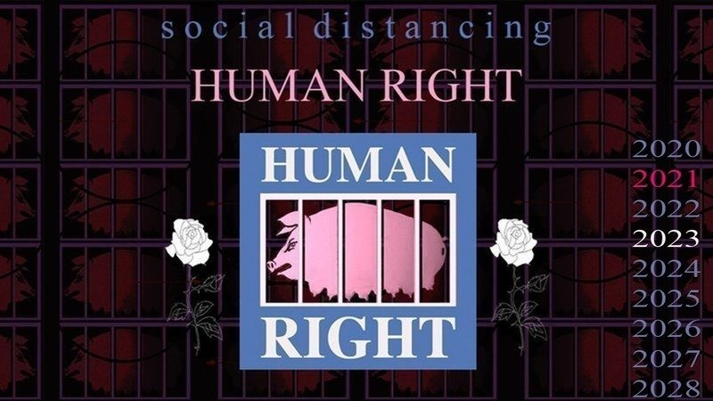
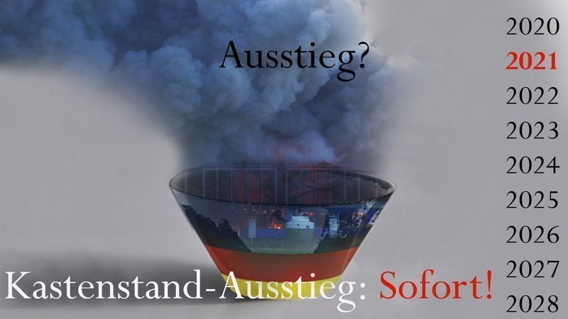
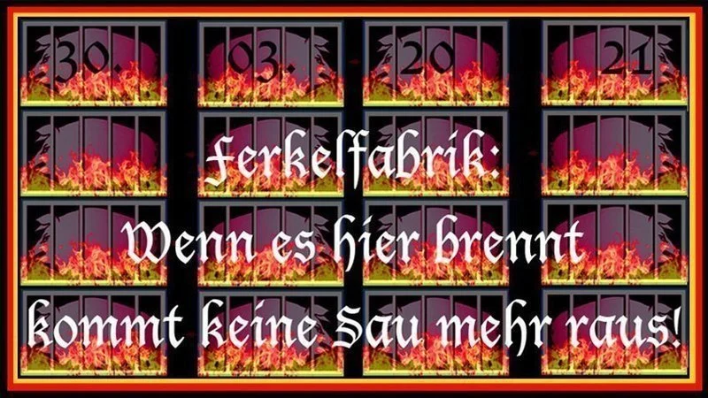
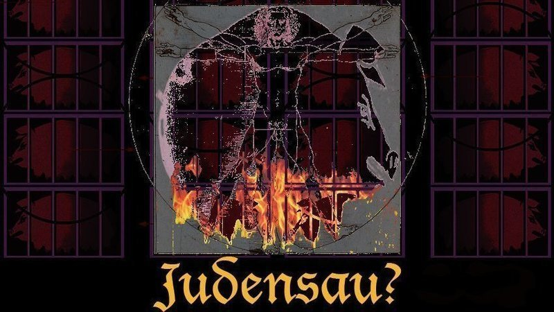
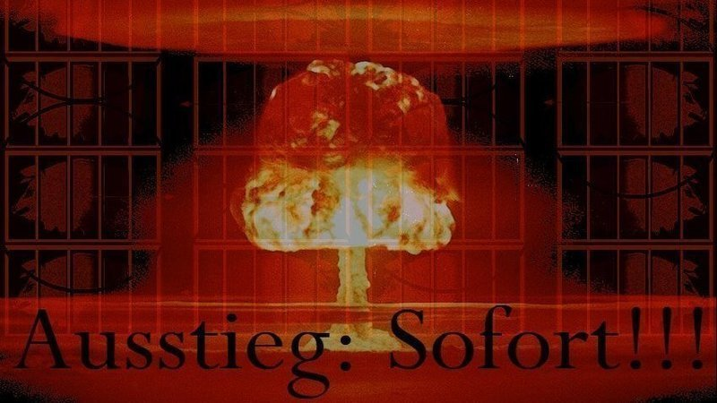
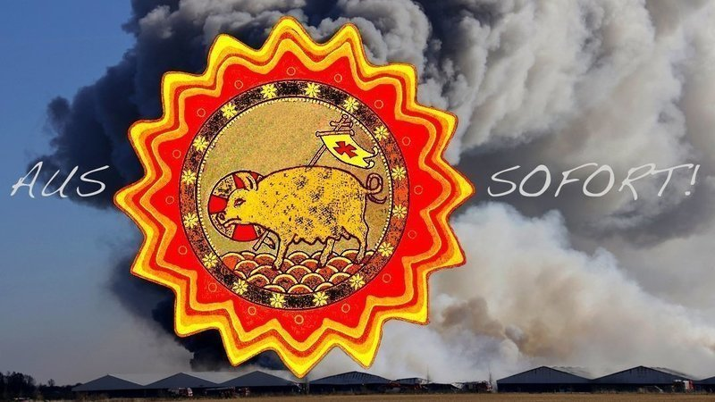

Neuigkeiten zur Petition
11.März2024- „Frauen können die Gestaltung der Zukunft nicht den Männern überlassen.“

Vorvorgestern am 8. März war Weltfrauentag - ein »Tag für die Rechte der Frau und den Weltfrieden«. Ein nobles Ziel, jeden Tag in weiterer Ferne... Jeder Feiertag verdrängt den vorherigen. Ostern steht schon wieder vor der Tür.
Sehr geehrter Herr Bundespräsident,
auch unsere Petition an Sie ist nach einem Vierteljahr Pause wieder auferstanden.
9. NOV. 2023 — Staatsräson Tierschutz?

Nach Reichstagsbrandverordnung, Reichskristallnacht und bedingungsloser Kapitulation gilt in Deutschland ein Grundgesetz, das im Jahre 2002 um drei Worte erweitert wurde. Sehr geehrter Herr Bundespräsident, vielleicht wundern Sie sich, wenn wir nach über einem halben Jahr Pause immer noch versuchen, Sie als obersten Repräsentanten der deutschen Kulturnation mit unserer Bitte zu erreichen. Ja, wir haben es auf Anraten Ihres Hauses unterlassen, Sie bei Ihrem gemeinsamen Besuch mit dem damals noch ungekrönten Ökokönig Charles III. in Brodowin mit der Übergabe unserer Petition zu behelligen. Inzwischen aber haben wir uns statt dessen an die neuen Hoffnungsträger für eine bessere Welt gewandt und verschiedene KIs mit den Rahmenbedingungen unseres Anliegens gefüttert. Wir haben also was dazugelernt und hoffen nun (auch in Anbetracht unseres sich rasant bedrohlich verändernden Umfeldes), Sie mit neuen Argumenten zu erreichen. Sehr geehrter Herr Bundespräsident, Es ist doch kein Zufall, dass die Betriebe mit brandgefährlichen Kastenständen laut Tierschutz-Nutztierhalterverordnung noch bis Anfang 2036 Zeit haben, um sich auf die neuen Anforderungen einzustellen (seit 1992! waren diese illegal). Darum, sehr geehrter Herr Bundespräsident, bitten wir Sie, sich für die vollumfängliche Umsetzung des Artikels 20a unseres Grundgesetzes einzusetzen: Dazu sollte auch etwas über den Tellerrand geschaut werden. Das industrielle Töten hat seinen Ursprung schon im vorvorherigen Jahrhundert in den Schlachthöfen von Chicago. Und der Spruch aus dem alten Europa „Solange es Schlachthäuser gibt, wird es auch Schlachtfelder geben" hat leider nicht seine Bedeutung verloren. UN-Generalsekretär Antonio Guterres spricht inzwischen von einer „Krise der Menschheit“. Sehr geehrter Herr Bundespräsident, der Reichstag ist kein Elfenbeinturm. Er wird den Problemen unserer Zeit nicht standhalten, wenn die Intensionen des Grundgesetzes nicht ernst genommen werden. Es wird uns überhaupt nicht helfen, kriegstüchtig zu sein, wenn wir dabei die erarbeiteten Staatsziele ignorieren. Bitte, nehmen Sie unseren diesbezüglichen Kulturimpuls endlich entgegen. Vielen Dank an alle, die uns schon unterstützt haben.Seitdem ist Tierschutz als Staatsziel im Grundgesetz verankert...
Wir wollen Sie wirklich nicht um Unmögliches bitten.
Sie sollen keine Staatsräson für die Sicherheit armer Schweine einfordern. Nein, wir wollen ganz einfach nur, dass Sie sich persönlich für eine Gleichbehandlung aller Staatsziele unseres Grundgesetzes einsetzen. Denn über 20 Jahre nach dem verankerten Staatsziel Tierschutz im GG kommt leider die Praxis der landwirtschaftlichen Tierhaltung einer Kapitulation der Staatszielbestimmung Tierschutz vor den Tiernutzungsinteressen gleich.
Von einem Mitglied des Deutschen Ethikrat wurde in Anbetracht der defizitären Situation im Tierschutzrecht geäußert, dass kein Rechtsgebiet bekannt sei, in dem so heuchlerisch vorgegangen wird wie im Tierschutzrecht.“ (VIER PFOTEN – RECHTSGUTACHTEN – 20 Jahre Staatsziel „Tierschutz“)
Die 50.000 armen Schweine am Tollensetal mussten jämmerlich verrecken, obwohl nur ein Jahr zuvor in der selben Ferkelfabrik der LFD 1.000 Schweine ersticken mussten. Folgenlos.
Der Glaube an Demokratie und Rechtsstaatlichkeit muss doch schwinden, wenn die 11 Jahre alte Brandschutzklage gegen die Baugenehmigung zweieinhalb Jahre nach dem Brand immer noch nicht abschließend behandelt wurde, jetzt aber die erwartete Brandschutzversicherungssumme ausgezahlt werden soll.
Für den Neustart der Massentierhaltung (trotz ungeklärter Brandschutzprobleme, auch bei einer Verkürzung der Kastenstand-Fixierzeit auf 5 Tage nach 2038) zu Lasten der kleine Betriebe, die dem Konkurrenzdruck der Monopole weichen müssen. "Wachse oder weiche" beschleunigt das Höfesterben.
Der Unmut in der Bevölkerung nimmt zu, wenn die Schere zwischen Arm und Reich sich so immer weiter vergrößert. Der Druck auf Rechtsstaatlichkeit und Demokratie wächst nicht nur im Außen, sondern hat Deutschland längst erreicht. Freiheit war mal ein hohes Gut. Heute am Tag des Mauerfalls vor 34 Jahren hat ein Teil der deutschen Bevölkerung nach jahrzehntelanger Fixierung gehofft, von staatlicher Willkür befreit zu werden.
„Der Staat schützt auch in Verantwortung für die künftigen Generationen die natürlichen Lebensgrundlagen und die Tiere im Rahmen der verfassungsmäßigen Ordnung durch die Gesetzgebung und nach Maßgabe von Gesetz und Recht durch die vollziehende Gewalt und die Rechtsprechung.“
Ansonsten gilt: Der Profit des Schweinesystems ist alles und das Leben des Einzelnen nichts. Das ist doch sicher auch nicht in Ihrem Interesse.
Wir würden uns freuen, wenn wir es schaffen, dass unsere Bitte noch in der Adventszeit bei Ihnen ankommt.
29. MÄRZ 2023 — Zustandsbericht für alle Unzuständigen
Das Inferno am Tollensetal mit ca. 50.000 Toten (fixierte arme Schweine) liegt am 30. März zwei Jahre zurück. Zum Jahrestag der Tragödie besucht der dafür nicht zuständig sein wollende Adressat unserer Petition das Ökodorf Brodowin, Ja, die abgebrannte modernste Ferkelfabrik Europas am Tollensetal ist wirklich etwas vollkommen anderes als ein Ökodorf mit dem Anspruch: "Diversifikation statt Konzentration". Wirkliche Veränderung kann nicht mit neuen Gesetzen beginnen, solange die alten problemlos ignoriert werden können. Bei der Brandkatastrophe in Alt Tellin konnte die Ursache nicht gefunden werden heißt es. Welch ein Unsinn. Die Ursache liegt im starken Willen, Schweinefleisch zu produzieren und zu exportieren - koste es , was es wolle. Der Blick zurück ist nicht erwünscht. "Obwohl zahlreiche Brandschutzvorkehrungen nicht den Regelungen der Landesbauordnung entsprachen" ist bisher keine Rücknahme bzw. Teilrücknahme der Baugenehmigung gem. § 48 VwVfG umgesetzt worden. Das kann der Bund dem Land nicht abnehmen - dafür ist MV zuständig. Es nicht zu tun, ist genauso fahrlässig wie eine Baugenehmigung, die im computersimulierten Brandschutzkonzept die Möglichkeit einer Zigarettenkippe, die den Kunststoff bei der Luftwäsche entzünden kann, nicht in Betracht gezogen hat. Der inzwischen in MV für Brandschutz zuständigen Minister Pegel erklärte auf der aktuellen Stunde des Landtags am 22.3.23, dass keine Zündquelle gefunden werden konnte, also auch keine Verantwortung für den Brand ermittelt werden konnte. Es gibt keinen Hinweis, dass das Brandschutzkonzept technisch versagt hätte..." Die über 10 Jahre alte immer noch nicht abschließend behandelte Klage des BUND gegen die Baugenehmigung kritisierte jedoch genau dieses Brandschutzkonzept, dass den ca. 50.000 Opfern nicht helfen konnte. Es ist was faul im Staate D. und niemand will dafür zuständig sein. "... es ist notwendig, sich als Staatsbürgerin und Staatsbürger für die freiheitliche Demokratie einzusetzen sowie gegenüber deren Verächtern eine feste Haltung und klare Distanz zu bewahren. Das lehrt uns der Blick zurück, und so viel sollte uns das Glück unseres Landes wert sein." 23. März Darum ist es jetzt höchste Zeit, alle die unsere Petition hier unterschrieben haben, um etwas zu bitten: Helft uns dabei, die über 93.000 Unterschriften an den Bundespräsidenten zu übergeben. Das müssen keine symbolischen Pappkartons voller Zettel sein. Am 30. März, dem Tag der entsetzlichen Tragödie ist dafür wohl der angemessene Zeitpunkt. Wir aber werden in Alt Tellin der 50.000 Opfer gedenken. DANKE in Begleitung des noch ungekrönten Ökokönigs Charles III.. ...
Im Bundespräsidialamt hofft man nun, dass wir davon absehen unser Anliegen "in einen inhaltlich vollkommen anderen Themen gewidmeten und unter erheblichen Sicherheitsmaßnahmen für Ihre Region angekündigten Termin des Bundespräsidenten einzubringen".
Aber vielleicht gibt es Ihnen Herr Steinmeier doch etwas zu denken, dass Ihr royaler Gast, ein überzeugter Bio-Landwirt sicher dazu beigetragen hat, dass in Großbritannien die Kastenstandhaltung seit 1991 erfolgreich verboten ist. Die gleiche Kastenstandhaltung, die in Deutschland seit 1991 illegal weiter praktiziert wurde. Ob der sogenannte Kastenstand-Ausstiegsbeschluss von 2020 wie angekündigt bis 2029 vollständig umgesetzt wird, steht in den Sternen und wird sowieso nur von den dann Regierenden abhängen.
Kastenstand Ausstieg: Sofort!
Und das geht nun mal nur mit Agrarindustrie.
Zum 1. Jahrestag des Großbrandes in MV verkündete Minister Dr. Backhaus: „Der Brand hat uns auf dramatische Weise vor Augen geführt, dass industrielle Tierhaltungsanlagen wie in Alt Tellin nicht in unser Land und nicht in diese Zeit passen. Dieser Auffassung bin ich nach wie vor.“ Ein Jahr später soll nun das Landesbaugesetz geändert werden, damit sich Katastrophen wie in Alt Tellin (industrielle Tierhaltungsanlage) nicht wiederholen können.
Das ist nicht tatenlos sondern vorsätzlich... die armen Schweine.
Bitte Herr Bundespräsident, nehmen sie sich am 30.3. ein Beispiel an Ihrem noblen Gast und helfen uns das fürchterliche Schweinesystem zu beenden, "es geht um nicht weniger als die Zukunft der Menschheit, um einen lebenswerten Planeten für uns, für unsere Kinder und alle zukünftigen Generationen".
Der eine oder die andere kennen vielleicht einen Weg, wie sie in Brodowin Herrn Steinmeier erreichen. Der Versuch sollte es wert sein.
Es wird sicher nicht unbemerkt bleiben.
23. FEB. 2023 — Stark engagiert

Sehr geehrter Herr Bundespräsident,
am 25. November hatten Sie ein langes Gespräch mit dem Gesundheitsminister. Er betonte auf Twitter Ihr starkes Engagement für die ärztliche Versorgung im ländlichen Raum. Nicht nur die Tragödie am Tollensetal mit ca. 50.000 verendeten armen Schweinen war eine Katastrophe mit Ansage. Hier noch einmal die ganze Irrsinnsgeschichte in dieser Petition für ALLE, die unsere 29 Updates noch nicht gelesen oder schon wieder vergessen haben: Auch wenn ehrenamtlicher Widerstand im Gegensatz zu diätenfinanzierter Opposition in deutschen Parlamenten wenig gewürdigt wird - als Schwachstellen-Seismograph sollte er nicht unterschätzt werden. Die Grundlage des Schweinesystems ist die Kastenstand-Haltung. Aus dieser Sackgasse müssen wir raus, ansonsten geht es wirklich nicht nur mit unserer Kulturnation dem Ende entgegen. Sehr geehrter Herr Bundespräsident, nehmen Sie Ihre Verantwortung wahr und unsere Petition an. Wir sehen keinen kompetenteren Multiplikator. DANKE an alle, die sich bisher unterstützend für die armen Schweine eingesetzt haben.Ganz ohne Zweifel - ein wichtiges Thema!
MLP Gesundheitsreport 2022: "Weder Ärzte noch Bevölkerung trauen der Politik Lösungen zu; vielmehr befürchten sie, dass durch aktuelle Krisen notwendige Reformen aufgeschoben werden (Ärzte: 77 Prozent, Bevölkerung: 55 Prozent)"
Schon 2014 wurde im Deutschen Städte- und Gemeindebund verkündet: „Die Kommunen sind aber nicht für die Sicherstellung der medizinischen Versorgung zuständig oder können als Ausfallbürgen politischer Fehlentwicklungen herangezogen werden“.
Zur Deutschen Hochkultur gehört nach wie vor auch Traditionspflege, vielleicht der letzte Halt in der immer komplexeren Welt.
Z.B. was wollen wir essen oder wie wollen wir leben... ?
Vor diesem Hintergrund hier noch einmal unsere Bitte an Sie Herr Bundespräsident, als höchster Repräsentant unserer Kultur:
Helfen Sie uns, das bedrohte Leben der armer Schweine zu retten!
"Mehrere Hunderttausend Tiere werden jedes Jahr in Deutschland bei 5.000 Brände auf landwirtschaftlichen Betrieben getötet." ( MV-Minister Dr. Backhaus)
„STALLBRÄNDE SIND EIN STRUKTURELLES PROBLEM!“
Fixiert in Kastenständen ist jede Flucht der Opfer unmöglich.
Kastenstand-Ausstieg: Sofort!
Aber wer trägt die Verantwortung, wenn fast zwei Jahre nach der Katastrophe die Brandschutzklage immer noch nicht abschließend bearbeitet ist?
"Pandemien und Klimawandel: Wie ernähren wir die Welt?"
Teilen macht Sinn
eine Auslegung von Recht und Gesetz
Industrielle Tierhaltung gehört zu den großen Verbrechen der Menschheitsgeschichte
Eine Frage der Haltung - Massentierhaltung ohne Ende...
Sag mir wo die Ferkel sind, Wo sind sie geblieben... Wann wird man je verstehen?
Himmelfahrt ohne Auferstehung am Tollensetal
Käfighaltung? Nein danke - Ein Offener Brief zur Tragödie am Tollensetal
Kastenstand-Ausstieg: Sofort!
Nie wieder "Tierfabrik" Alt Tellin
Brand in Alt Tellin war ein Fanal für die gescheiterte Idee der Tierproduktion
Reale Veredelungswirtschaft: Trial & Error
Nein heißt Nein und Sofort heißt Sofort.
Bundesratsinitiative vom Minister Backhaus erfolgreich gestartet
Anordnung der sofortigen Vollziehung
Staatliche Ausstiegshilfen für Tierquäler?
Weihnachtsbotschaft
Neujahrsansprache
California Dreamin' - Flower Power für Arme Schweine!
Schöne neue Welt
Weil nicht sein kann, was nicht sein darf
Über allen scheint die Sonne - auch in der Sackgasse
andere Länder - andere Sitten
Wo bleibt der politische Wille, die bekannten Ursachen der Probleme anzuerkennen und ins Handeln zu kommen?
Ansonsten läuft es vielleicht auf etwas ganz anderes hinaus:
„Ich fürchte, die Welt schlafwandelt nicht in einen größeren Krieg, sie bewegt sich mit weit geöffneten Augen in ihn hinein.“ das sagt der Generalsekretär der Vereinigten Nationen, António Guterres.
Also schon wieder eine Katastrophe mit Ansage... vielleicht die letzte? NEIN, das soll nicht sein.
10. FEB. 2023 — "Es lebe die Freiheit"

Sehr geehrter Herr Bundespräsident,Leider mussten wir inzwischen erfahren, dass Sie unsere Petition "Kastenstand-Ausstieg für arme Schweine" nicht annehmen wollen. Was für ein riesiges Glück soll es sein, in einer Demokratie zu leben, in der 87 % aller Befragten sich für ein Verbot der vor mehr als dreißig Jahren für illegal erklärten Metallkäfige aussprachen, welche dann Jahrzehnte später für weitere 17 Jahre legalisiert wurden? Und als ein Jahr später ca. 50.000 Schweine in solchen Systemen fixiert in Alt Tellin verbrannt sind, wurde die seit 10 Jahren anhängige Brandschutzklage immer noch nicht abschließend behandelt... Für Sie Herr Bundespräsident und alle anderen, die unsere vielen Updates nicht gelesen haben ein hilfreicher Verweis auf unsere Neuigkeit vor zwei Jahren (zwei Monate vor der Brandkatastrophe): eine Auslegung von Recht und Gesetz Liebe Unterstützerinnen und Unterstützer, "ICH BIN SCHOCKIERT DAS SOWAS ÜBERHAUPT ERLAUBT IST." Ja, es ist erschreckend, dass die jahrzehntelange tierquälerische Praxis der Sauenhaltung in Deutschland im vergangenem Jahr legalisiert werden konnte. TOLLENSETALER STIMME Ausgabe 5 / September 2019: "Felder werden eher zu Bauland als zu Wäldern. Und wenn die Dürre da ist, wird Hilfe eingefordert, um weiter Fleisch produzieren zu können. "Nicht das Recht soll herrschen, sondern der von der Natur Stärkere." Diese Auslegung von Recht und Gesetz darf nicht zur Norm werden. Also liebe Mitmenschen bitte unterstützt und teilt unsere Petition. Sehr geehrter Herr Bundespräsident, Ihr Vorschlag, unsere Petition dem Agrarausschuss zu übergeben greift leider viel zu kurz und ignoriert das viel umfassendere Systemversagen nicht nur in der Schweineproblematik. "Die Zukunft der Demokratie hängt nicht nur vom anderen ab, sondern auch von Ihnen" DANKE für alle, die uns bisher unterstützt haben - bitte bleibt dran.Sie verweisen als oberster Repräsentant unserer Kulturnation auf andere Zuständigkeiten...
Dem widersprechen wir ausdrücklich und bezugnehmend auf Ihre Rede vom 6. Februar:
"Unser Blick heute ist geprägt von der Erfahrung, dass wir Deutsche seit Jahrzehnten in einer freiheitlichen Demokratie leben; seit mehr als dreißig Jahren tatsächlich alle Deutschen. Es waren die mutigen Menschen in der DDR, die friedlich Widerstand leisteten und damit die Mauer zu Fall brachten.Welch riesiges Glück ist das: Wir leben vereint in einer Demokratie."
Was für ein riesiger Glück für die Profiteuere des Unrechts!
1. FEB. 2021 —
Dieser Kommentar steht seit zwei Tagen unter unserer Petition.
Das ist nicht nur eine Katastrophe für die armen Schweine,
sondern auch für uns Menschen.
Die Treibhausgasemission steigt und statt die Verursacher abzuschalten soll nun für Sauen die seit 1992 rechtswidrige Kastenstandhaltung für weitere 17 Jahre verlängert werden.
„Ein Armutszeugnis für eine Exekutive, wenn man eine Entscheidung, eine Auslegung von Recht und Gesetz, hat und die Behörden sagen, wir können es nicht umsetzen“ kritisiert Strafrechtsprofessor Jens Bülte.
Bananenrepublik."
Das forderten schon die radikalen Sophisten im alten Griechenland.
Eine Sternfahrt nach Berlin!!! mit über 15.000 Traktoren und über 40.000 Teilnehmern gegen die geplante neue Gülleverordnung im November 2019, gefolgt von einer Vielzahl ähnlicher Bauernproteste in die urbanen Ballungszentren haben nicht nur deren junge Klima-Aktivisten in den Hintergrund gedrängt, sondern auch den Boden bereitet für eine Tierqual-Verlängerung für weitere 17 Jahre.
Sie kann letztendlich auf uns selbst zurückfallen.
3. OKT. 2022 — Abwarten und Tee trinken?

Schon im März 2022 - eine Jahr nach der Brandkatastrophe am Tollensetal - hatte die Unterschriftenzahl von 62.000 gegen die todbringende Kastenstandhaltung deren Opferzahl von ca. 50.000 toten Schweinen überholt. Das und der 1. Katastrophen-Jahrestag am 30.03.2022 sollte Anlass sein, die Petition zum "sofortigen Ausstieg aus der Kastenstandhaltung" an den höchsten Repräsentanten unserer Kulturnation zu übergeben. Am 9. März erfuhren wir per Telefon 030 2000-0, das unsere Petition auf dem Weg sei und weitergeleitet wurde. Heute ist der Tag der deutschen Einheit - vielleicht wird morgen alles besser... oder irgend etwas anderes muss passieren? Die Unterstützerzahl ist inzwischen schon über 92.000 - aber wozu muss die noch gesteigert werden, wenn niemand wirklich die staatlich legitimierte Tierquälerei beenden will. Unsere Petition wird formell ausgebremst - vielleicht auch, weil inhaltlich nichts ernsthaft gegen unser Anliegen vorgebracht werden kann. Was sollen wir bloß tun unter den gegebenen Verhältnissen? 2020 legalisierte der Bundesrat den Tierqual-Kastenstand für weitere acht Jahre - 2021 wurde am Tollensetal der Ausstieg aus dem Kastenstand praktiziert: ca. 50.000 Tote. Das Leid der armen Schweine schreit zum Himmel...! Bitte helft uns, diese Petition zu übergeben. DANKE
Aber das gelingt uns irgendwie nicht...
Es wird leider im wahrsten Sinne des Wortes immer kafkaesker.
Seit einem halben Jahr versuchen wir einen Termin zur Unterschriftenübergabe zu finden.
Eine Bearbeitungszeit von 4 - 6 Wochen wurde in Aussicht gestellt.
Am 13. Mai haben wir nachgefragt und erfahren, dass unser Anliegen in Referat 12 in Bearbeitung sei.
Am 7. Juni erfuhren wir, dass in Referat 12 niemand davon wüsste.
So haben wir um eine Empfangsbestätigung gebeten, um uns allen wiederholte Umwege zu ersparen...
unsere mail wurde an einen erkrankten Sachbearbeiter weitergeleitet, der anschließend bis 18.8. im Urlaub gewesen sei, sagte am 28.07.22 Frau R. im Geschäftszimmer Referat 12
2.9.2022 Frau H.: nimmt den Vorgang neu auf, ihre Kolln. R. ist gerade nicht da. Ihr selbst sei der Vorgang nicht bekannt. Mehr kann sie gerade nicht machen, doch sich Gedanken machen und die Petition anschauen.
es ist wirklich wie bei Kafka , nur dass es inzwischen Telefone gibt...
23.9. 22: Frau H. war aber nicht da und eine andere junge Frau aus Ref. 12 nimmt sich nun des Vorgangs an und spricht mit Frau R.
und wenn wir Glück haben bekommen wir eine neue mail...
23. JUNI 2022 — Deutsche Schweine

In Deutschland wurden 2021 fast 5 Millionen Tonnen Schweinefleisch "produziert". Dafür wurden 51,8 Millionen Schweine getötet. Auf der Suche nach den Ursachen für die praktizierte Tierquälerei der seit 1992 illegalen Kastenstände und der Tragödie am Tollensetal haben wir in bisher 26 Updates in dieser Petition versucht, möglichst viele der im Genehmigungsverfahren nicht relevanten Punkte aufzugreifen. Niemand kann mehr sagen: das haben wir nicht gewußt. Nicht ohne Grund haben wir unsere Petition explizit an den obersten Repräsentanten unserer Kulturnation gerichtet. Unterstützt und teilt unsere Petition, DANKE.Die Grundlage dieser Effizienz ist Quälerei in der Sauenhaltung der Ferkelfabriken...
20 % aller Schweine sterben noch vor der Schlachtung, der Großteil als Saugferkel trotz sogenannter Ferkelschutzbügel.
Abseits dieser Normalität verbrannten 2021 mit der modernsten Ferkelfabrik ca. 50.000 Schweine am Tollensetal.
Eine Rettung war nicht vorgesehen.
Das geltende Brandschutzgutachten hatte die Gefahr eines Brandfalls ausgeschlossen. So mussten auch diese Schweine vor der Zeit sterben.
Die vor 10 Jahren eingereichte Brandschutzklage des BUND beim Verwaltungsgericht Greifswald gegen die Baugenehmigung ist bis zum heutigen Tage nicht abschließend beurteilt.
Die etwa 700 anderen Einwände gegen die Ferkelfabrik wurden 2009 beim Anhörungstermin damals mit dem Tagesordnungspunkt 13.6 "Profitgier, Bereicherung" abgeschlossen. Dieser Punkt wurde, so wie auch andere (Klimawandel, Regenwaldzerstörung für Sojafutter, multiresistente Keime...) für nicht relevant im Genehmigungsverfahren erklärt.
Uns wurde dabei immer klarer, dass die katastrophalen Zustände der industriellen Tierproduktion ohne diese Bezüge nicht verständlich sind.
Die deutsche Art Schweine zu halten hat aber auch einen ambivalenten kulturellen Hintergrund.
Das Schwein galt im Mittelalter als Symbol des Teufels.
Auf dutzenden Schmähplastiken an deutschen Kirchen verunglimpft in jahrhundertealter Tradition die "Judensau" pauschal immer noch alle Juden mit ihrer Hassbotschaft. Eine Klage dagegen wurde vom Bundesgerichtshof abgewiesen. "Die Judensau von Kassel" auf der Documenta hat gezeigt, wie aktuell diese Metapher in Deutschland immer noch ist.
Niemand will "als dreckiges, unreines Tier" zur Sau gemacht werden.
Aber Schweine müssen heute auf Spaltenböden über der eigenen Gülle stehen. Die reinlichen Tiere leiden so unter Augenentzündungen und Lungenentzündung. Das müssen sie ertragen...
Anders als bei Zigarettenschachteln, die mit der Warnbotschaft "Rauchen ist tödlich" werben, ist auf Fleischverpackungen bisher nichts Vergleichbares im Sinne von "Genuss mit Verantwortung" zu finden.
Und das angekündigte "Wohlfühlfleisch" ignoriert wieder einmal das Sauenproblem. Notwendige Arbeit im Hintergrund wird immer noch nicht ausreichend wertgeschätzt.
"Qualfleisch aus Massentierhaltung" gibt es zwar in keinem Supermarkt aber im Kultursender ARTE immer wieder.
Übrigens, die Diätindustrie in Europa hat einen jährlichen Umsatz von 100 Milliarden Euro. Unter anderem in der Folge des Schlankheitswahn durch die üblichen mehr oder weniger versauten sexistischen Werbestrategien der schönen neuen Welt.
Wann es zur Übergabe kommt, wissen wir noch nicht.
Zur Eröffnung der Documenta hat Herr Steinmeier mit seiner Rede gezeigt, dass er unser Anliegen verstehen könnte.
In der Hoffnung auf weitere Mitzeichnungen bitten wir darum immer noch:
für einen gemeinsamen Ausstieg aus der Kastenstandhaltung.
18. JUNI 2022 — Grenzen der Freiheit

Eigentlich wollten wir unsere Petition zum 1. Jahrestag nach der Tragödie mit ca. 50.000 verbrannte Arme Schweinen an den Bundespräsidenten zum 30. März 2022 übergeben. „Dem Bundespräsidenten ist es für seine Reden und Gespräche mit den Repräsentanten des öffentlichen Lebens sehr wichtig, aus erster Hand von den Sorgen, den Anregungen und der Kritik der Bürgerinnen und Bürger zu erfahren. In dieser Hinsicht wurde Ihr Einsatz für den Tierschutz im Bereich der Nutztierhaltung von Schweinen mit einer Petition gegen die sog. Kastenstandhaltung bei Säuen hier aufmerksam zur Kenntnis genommen." Dafür möchten wir uns ausdrücklich bedanken. Ferner wurde uns mitgeteilt, "dass es dem Bundespräsidenten nicht obliegt, sich operativ in die Aufgaben anderer Verfassungsorgane einzubringen oder dazu im Einzelfall Stellung zu nehmen." Wohl wissend, dass dieser Weg nicht zielführend ist (eine andere Petition „Schweine raus aus Kastenständen!“ schon vor zwei Jahren mit über 277.000 Unterzeichnungen hat gezeigt, dass dieser Weg nicht zum Erfolg führt) haben wir uns am 24. Dezember 2021 entschlossen, diese Petition nicht weiter an die verantwortlichen PolitikerInnen zu adressieren. Statt dessen haben wir uns bewußt an die Repräsentanten unseres Kulturstaates: Weil uns die ausdrückliche Position des höchsten Repräsentanten unseres Staates zu dem in unserer Petition benannten himmelschreiendem Unrecht so sehr wichtig ist. Uns geht es um das Ende eines Unrechtssystems, das dem Konsumenten auf der einen Seite männliches Wohlfühlfleisch anbietet, auf der anderen Seite aber die Grundlage unseres Schweinesystems, die armen Sauen noch für Generationen in staatlich legitimierter Tierqual fixiert! Mit der staatlichen Legitimierung der seit 1992 illegalen Sauen-Tierqual, gefeiert vor zwei Jahren als Ausstiegsprogramm auch durch die Grünen, wurde klar, was die armen verbrannten 50.000 Schweine haben nicht wissen können, dass sich mit dem besten aller Ställe, auch so mancher Glaube an die Demokratie in Rauch aufgelöst hat. Zur Eröffnung der Documenta wird Deutschlands Bundespräsident in seiner Eröffnungsrede die Grenzen der Freiheit (der Kunst) aufzeigen. Ob er damit helfen kann, nicht nur die armen Schweine aus den Kastenständen zu befreien, wissen wir bisher nicht. In diesem Sinne bitten wir immer noch darum: DANKE
Verständlicherweise hat der aktuelle Krieg in der Ukraine die Erinnerung an die Rauchwolken vom Tollensetal überlagert...
Doch am gleichen Tag, an dem der deutsche Bundeskanzler erstmals in der Ukraine reist, wurde endlich auf unsere Mail vom 25. Februar geantwortet.
Es wurde empfohlen, sich bitte mit einzelnen Anregungen für gesetzliche Änderungen oder Petitionen zur Verbesserung des Tierschutzes unmittelbar an die gesetzgebenden Stellen zu wenden."
den Bundespräsidenten, die Kulturstaatsministerin, den Vizepräsidenten des Deutschen Ethikrates aber auch an den Minister für Klimaschutz, Landwirtschaft, ländliche Räume und Umwelt in MV gewandt.
Und weil wir vom Bundespräsidialamt erfahren haben, dass dort gleichzeitig mehrere Adressaten als „Offener Brief/ Kenntnisgabe“ grundsätzlich nicht zur Beantwortung anstehen, haben wir die Staatssekretärin für Kultur Claudia Roth und Prof. Dr. phil. Dr. hc Julian Nida-Rümelin als Kulturträger ebenso wie den dienstältesten Minister Deutschlands, Herrn Dr. Till Backhaus als Adressaten unserer Petition gestrichen.
Denn mit unseren 25 Updates zum aktuellen Schweinesystem wurde immer deutlicher: „Etwas ist faul im Staate D...“
Im Gesetzentwurf zur Einführung der staatlichen Tierhaltungskennzeichnung für frisches Schweinefleisch ist keine Sau zu finden. „Maßgeblich für die Kennzeichnung der Lebensmittel ist die Haltungsform der Tiere während des angeblichen „produktiven Lebenss“, bei Fleisch ist dies die Mast der Tiere.“
Leider geht das Wohlfühlprogramm an den Schweinemüttern vorbei. Als "dreckige Judensäue" hängen sie an christlichen Kirchen und Domen der ihr Schweinefleisch immer noch liebenden deutschen Nation. Nicht nur in Wittenberg, wo der große Reformator vorschlug, jüdische Synagogen und Schulen mit Feuer anzustecken.
Die Kastenstandhaltung der Ebermast ist schon lange verboten.
Wo bleibt hier der Gleichheitsgrundsatz?
Aber es gilt: "Die Hoffnung stirbt bekanntlich zuletzt!"
Bitte unterstützt und teilt unsere Petition,
die wir trotz allem immer noch überreichen wollen,
in dieser irren Zeit.
11. MAI 2022 — Sind wir bald alle arme Schweine?

2021 mussten ca. 50.000 arme Schweine am Tollensetal, am ältesten bekannten Schlachtfeld Europas, bei lebendigem Leibe verbrennen. Die Rauchsäule erinnerte an brennende Ölfelder im Irakkrieg...“] 2022 müssen unschuldige Frauen und Kinder in der Ukraine sterben und die Gefahr eines atomaren Weltkriegs steht vor der Tür.
Zwei Katastrophen mit Ansage.
Die andauernden Warnungen vor unzureichendem Brandschutz in der Ferkelfabrik konnten die unvorstellbare Tragödie nicht verhindern. Die Produktion von 300.000 Ferkeln pro Jahr als Grundlage für Deutschlands gigantischen Schweineexport war zu wichtig.
Erschien die prognostizierte Gefahr wirklich zu unglaublich?
Oder wurde die Katastrophe einfach in Kauf genommen?
Dafür spräche, dass es nach dieser Tragödie keine relevanten Konsequenzen gegeben hat. Das Privileg des vorzeitigen Baubeginns, ohne das Ergebnis der Brandschutzklage abzuwarten, war durchgesetzter politischer Wille unter der Losung
15. APR. 2022 — ... und so weiter und so fort?

Als vor einem Jahr am 30. März ca. 50.000 am Tollensetal starben, waren die Opfer der Katastrophe mit Ansage nur arme Schweine. Die Terra Grundwerte AG, die Besitzerin der noch staatlich legitimierten LFD-Tierqual-Produktion könnte sich durchaus eine Auferstehung der abgebrannten Anlage... vorstellen...“]